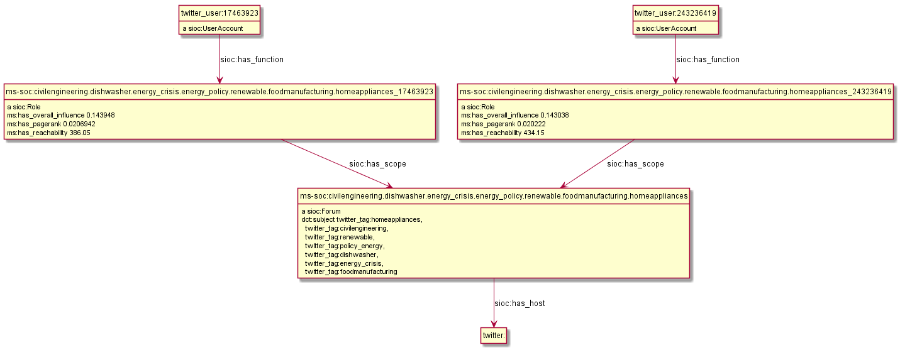

Materials related to FP7 Multisensor
Table of Contents
- 1. Linguistic Linked Data
- 2. MultiSensor NIF Representation
- 3. Graph Handling
- 4. Confidence and Provenance
- 5. Generic vs Specific Babelnet Concepts
- 6. Multimedia Annotation
- 7. TODO Translation
- 8. Social Linked Data
- Multisensor Linked Data: web presentation 2014-05-19, Barcelona
1 Linguistic Linked Data
There's been a huge drive in recent years to represent NLP data as RDF. NLP data is usually large, so does it make sense to represent it as RDF? What's the benefit?
- Ontologies, schemas and groups include: GRaF ITS2 FISE LAF LD4LT LEMON LIME LMF MARL NERD NIF NLP2RDF OLIA OntoLex OntoLing OntoTag Penn Stanford… my oh my!
- There are a lot of linguistic resources available that can be used profitably: BabelNet FrameNet GOLD ISOcat LemonUBY Multitext OmegaNet UBY VerbNet Wiktionary WordNet.
The benefit is that RDF offers a lot of flexibility for combining data on many different topics in one graph.
- Linguistic Linked Data: presentation, 2014-10-08, Bonn, Germany
- Zotero Linguistic LD bibliography
- Multisensor NER Mapping (html), (org): representing Named Entity Recognition in NIF and NIF Validation
- Integrating FrameNet in NIF
Issues I've found in NIF:
- Issue 1: nif:opinion vs marl:extractedFrom. Example: ./NIF-issue-1.ttl
- Issue 2: itsrdf vs fise properties. Example: ./NIF-issue-2.ttl
- Issue 12: location of NIF3.0 and issue tracker
2 MultiSensor NIF Representation
Prefixes used by Multisensor: ./img/prefixes.ttl.
Examples (a few more are explained in Multisensor-NER-Mapping):
- ./NIF-example.ttl: NLP data in RDF (Turtle). Covers NIF (text binding), OLIA (linguistic properties), Penn (POS tagging), Stanford (dependency parsing), ITS20 (semantic annotation), NERD (entity extraction classes), Stanbol/FISE (multiple NLP tools/annotations per word/phrase), MARL (opinion/sentiment); and use of entities from DBpedia, WordNet, YAGO.
- ./NIF-example.ttl.html: syntax-highlighted with Emacs
- ./NIF-example.jsonld: same in JSONLD, shows that Turtle should be used for examples/discussion/QA and JSONLD for machine communication only
- ./NIF-example2.ttl: example of NER as produced by LT (doesn't yet include all fields from the NER Mapping above).
- ./NIF-example2.ttl.html: syntax-highlighted with Emacs
- ./NIF-example2.json: same in JSON-LD
- ./NIF-example3.ttl: Various kinds of Named Entities as per ./Multisensor-NER-Mapping.html
- ./NIF-example3.ttl.html: syntax-highlighted with Emacs
- ./NIF-example4.ttl: sentiment with MARL
- ./NIF-example4.jsonld: same in JSONLD
For FrameNet (relation extraction) representation see ./FrameNet/. The remaining sections describe specific representation issues (speech recognition, translation, multimedia)
3 Graph Handling
3.1 TODO Storing Service PUT vs POST
Please note that the ASR is written in the same graph as the SIMMO. PUT rewrites the graph: https://www.w3.org/TR/sparql11-http-rdf-update/#http-put. So you should use a sequence like this:
- PUT SIMMO
- POST ASR0
- POST ASR1
- POST image annotation
3.2 Graph Normalization
The RDF_Storing_Service saves all data about a SIMMO in a named graph having the same URL as the SIMMO base URL. This makes it easy to get all data about the SIMMO. But it also leads to duplication of common triples. Eg consider this:
<http://multisensor.org/content/53a0938bc4770c6ba0e7d7b9ca88a637f9e9c30488#char=100,107> its:taIdentRef dbr:Germany. # Common triples dbr:Germany a nerd:Location; foaf:name "Germany"
If dbr:Germany appears 1000 times in SIMMOs, these common triples will be duplicated 1000 times.
This leads to extreme slowness of ElasticSearch indexing:
when adding the 1000th occurrence of dbr:Germany it indexes (the same) foaf:name "Germany" 1000 times,
i.e. storing time grows potentially quadratically with the number of SIMMOs.
The proposed fix is graph normalization: the storing service examines every triple <s,p,o>.
- If
sstarts with one of these prefixes the triple is stored in the default graph:http://dbpedia.org http://babelnet.org
- Otherwise the triple is stored in the SIMMO graph.
This still writes common triples 1000 times, but there is no duplication since a triple can exist only once in a given graph.
- Note: some SIMMOs contain subjects that don't have the SIMMO base URL as prefix, namely embedded videos and images. It's not correct to move them to the default graph, so we work with an explicit list of common prefixes.
3.2.1 Query Changes
The tradeoff is that you won't be able to get all SIMMO data by simply asking for a graph.
Eg query 2.3 Retrieve NEs (Select) is a bit sloppy, since it asks for certain types (and foaf:name) by graph, without looking for any relation:
SELECT DISTINCT ?ne ?type ?name { GRAPH <http://data.multisensor.org/content/53a0938bc4770c6ba0e7d7b9ca88a637f9e9c30488> { ?ne a ?type; foaf:name ?name FILTER (?type IN (dbo:Person, dbo:Organization, nerd:Amount, nerd:Location, nerd:Time))}}
If graph normalization is applied, we'd have to find the NEs by relation its:taIdentRef,
and get their common triples from outside the SIMMO graph:
SELECT distinct ?ne ?type ?name { GRAPH <http://multisensor.org/content/53a0938bc4770c6ba0e7d7b9ca88a637f9e9c30488> {[] its:taIdentRef ?ne} ?ne a ?type; foaf:name ?name FILTER (?type IN (dbo:Person, dbo:Organization, nerd:Amount, nerd:Location, nerd:Time)) }
(Actually this query also works before graph normalization since the part outside GRAPH {..} looks in all graphs, both SIMMO and default).
3.2.2 Normalization Problems
Moving common triples outside of the SIMMO graph raises two problems:
- If you examine the results of the query above, you'll see that some entities (eg
dbr:Facebook) have several labels, eg"Facebook, Inc."@en "Facebook"^^xsd:string
The reason is probably that different SIMMOs have different versions of the label, and different versions of the pipeline emit different literals ("en" language vs xsd:string). Both of these labels will be indexed in ElasticSearch for all occurrences of this NE. But the pipeline has emitted the labels globally (as
foaf:nameofdbr:Facebook) rather than locally (eg asnif:anchorOf), in effect asserting that both are globally valid labels of Facebook. So that's a correct consequence of the data as emitted. - If the last SIMMO referring to a global NE is deleted, that NE will remain as "garbage" in the common graph. But I don't think that is a significant problem, since the amount of such "garbage" won't be large, and since it is harmless.
Are the partners willing to make this change to the data model, and change their queries correspondingly?
4 Confidence and Provenance
Until recently the Multisensor pipeline used only one NER annotation tool (from Linguatec).
Consider the phrase "Phillips Imaging Systems". Linguatec correctly guesses a NER (Organization) and makes a local entity #Organization=Systems (but doesn't pick the whole phrase).
So we could capture the confidence and provenance of the annotation as follows:
<#char=1116,1123> a nif:Word; nif:anchorOf "Systems"; itsrdf:taClassRef nerd:Organization; itsrdf:taIdentRef <#Organization=Systems>; itsrdf:taConfidence 0.9; # means the same as "0.9"^^xsd:decimal itsrdf:taAnnotatorsRef "text-analysis|http://linguatec.com".
4.1 Multiple Annotations with FISE
Recenly we started adding annotations from a second tool (Babelfy). So now potentially the same word or phrase can carry two annotations. The same word "System" is recognized by Babelfy as http://babelnet.org/rdf/s00075759n, which is the general concept "Instrumentality that combines interrelated interacting artifacts".
The NIF+Stanbol profile (FISE) defines a model for this:

<#char=1116,1123> a nif:Word; nif:anchorOf "Systems". <#char=1116,1123-annot-Linguatec> a fise:EntityAnnotation; fise:extracted-from <#char=1116,1123>; fise:entity-type nerd:Organization; fise:entity-reference <#Organization=Systems>; fise:confidence "0.9"^^xsd:float; dct:creator <http://linguatec.com>. <#char=1116,1123-annot-Babelnet> a fise:EntityAnnotation; fise:extracted-from <#char=1116,1123>; fise:entity-reference bn:s00075759n; fise:confidence "0.95"^^xsd:float; dct:creator <http://babelfy.org>.
It's not nice that NIF+Stanbol uses completely different properties from the simple case, as we reported in NLP2RDF/specification#2.
4.2 Multiple Annotations with NIF 2.1 RC
Recently a new proposal "Provenance and Confidence for NIF annotations" was published, motivated by the FREME project. It is part of a developing NIF 2.1 specification (currently at Release Candidate stage):
- published: http://nif.readthedocs.org/en/2.1-rc/prov-and-conf.html
- source: https://github.com/NLP2RDF/documentation/tree/2.1-RC/docs (last edit mid-Jan 2016, 3 months ago)
It is somewhat better than FISE, but we still don't know whether it's stable and can be relied upon (asked in NLP2RDF/documentation#1).
The same annotations as in the previous section could be represented as follows:
<#char=1116,1123> a nif:Word; nif:anchorOf "Systems"; nif:annotationUnit <#char=1116,1123-annot-Linguatec>, <#char=1116,1123-annot-Babelnet>. <#char=1116,1123-annot-Linguatec> a nif:AnnotationUnit; itsrdf:taClassRef nerd:Organization itsrdf:taIdentRef <#Organization=Systems>; # local generated entity nif:confidence 0.9; nif:provenance <http://linguatec.com>. <#char=1116,1123-annot-Babelnet> a nif:AnnotationUnit; itsrdf:taIdentRef bn:s00075759n; # general concept "System" nif:confidence 0.95; nif:provenance <http://babelfy.org>.
Note: the above is in accordance with section Using only Generic Provenance and Confidence Properties. The first section Using Companion Properties describes using different properties in pairs:
- nif:taClassConf & nif:taClassProv for itsrdf:taClassRef
- nif:taIdentConf & nif:taIdentProv for itsrdf:taIdentRef
However, the Linguatec annotation always emits both Class and Ident, so it's more appropriate to use the single (generic) properties.
4.3 NIF 2.1 RC Backward Incompatibility
FLASH update: NIF 2.1 RC is still very unstable (development is ongoing at https://github.com/NLP2RDF/ontologies/tree/nif2.1).
On 14 Mar 2016 a massive change was made (Modularisation of NIF) that split out relevant parts to nif-annotation.ttl and a separate namespace nif-ann:.
Commit notes:
- introduced a separated NIF Annotation ontology module
- added deprecation and redirection pointers for annotations vocab previously in NIF Core that was migrated to NIF Annotation
- introduced a NIF Incubator ontology document for tentative NIF parts
- moved translation vocabulary to NIF Incubator
It deprecated a bunch of elements in nif-core.ttl (namespace nif:), so it's backward incompatible (posted as NLP2RDF/ontologies#16).
I think this one change will prevent us from using NIF 2.1 in Multisensor.
4.4 Singling Out an Annotation
Both NIF+Stanbol and NIF 2.1 RC allow one annotation to be singled out and represented "inline" (in a direct way). This is important, since the direct way is more economical, and this matters when we are considering millions of annotations. NIF 2.1 RC specifically describes such case, relegating "alternative, less probable entity linking results" to an indirect representation.
Assume that in the above example, we single out the Linguatec annotation. We can represent this as follows in NIF+Stanbol:
<#char=1116,1123> a nif:Word; nif:anchorOf "Systems"; # direct annotation itsrdf:taClassRef nerd:Organization; itsrdf:taIdentRef <#Organization=Systems>; itsrdf:taConfidence 0.9; itsrdf:taAnnotatorsRef "text-analysis|http://linguatec.com". <#char=1116,1123-annot-Babelnet> a fise:EntityAnnotation; # indirect annotation fise:extracted-from <#char=1116,1123>; fise:entity-reference bn:s00075759n; fise:confidence "0.95"^^xsd:float; dct:creator <http://babelfy.org>.
We can also represent it in NIF 2.1 RC as follows:
<#char=1116,1123> a nif:Word; nif:anchorOf "Systems"; # direct annotation itsrdf:taClassRef nerd:Organization itsrdf:taIdentRef <#Organization=Systems>; # local generated entity nif:confidence 0.9; nif:provenance <http://linguatec.com>; # indirect annotation nif:annotationUnit <#char=1116,1123-annot-Babelnet>. <#char=1116,1123-annot-Babelnet> a nif:AnnotationUnit; itsrdf:taIdentRef bn:s00075759n; # general concept "System" nif:confidence 0.95; nif:provenance <http://babelfy.org>.
NIF 2.1 RC has the advantage that it uses the same properties in both the direct and indirect annotation. In contrast, the NIF+Stanbol approach uses different properties and also:
itsrdf:taAnnotatorsRefis not a URL but a specially formatted string (coming from the XML heritage of ITS, see 5.7 ITS Tools Annotation)fise:confidenceis specified as a xsd:float while itsrdf:taConfidence is xsd:decimal
Remaining question
- How to single out one annotation as "primary"
- How to inform the pipeline so the other annotations are made as indirect (
nif:AnnotationUnit)
If we cannot do this dynamically, then we should emit the less numerous annotations using the indirect way.
5 Generic vs Specific Babelnet Concepts
The Concept Extraction Service makes a distinction between Generic vs Specific Babelnet concepts, which is used by the Summarization service.
- Generic concepts
- Specific concepts are specific to the Multisensor domain, which are recognized by statistical analysis over the Multisensor SIMMO corpus.
Consider the following example: "Wind turbines are complex engineering systems":
- bn:s00081274n "wind turbine" is a specific concept, which we represent as
nif:taClassRef ms:SpecificConcept - bn:s00075759n "system" is a generic concept, which we represent as
nif:taClassRef ms:GenericConcept
Comparing sec 4.1 where we used separate nodes for each annotation, here we use a single node per annotation:
<#char=0,45> a nif:Context; nif:isString "Wind turbines are complex engineering systems". <#char=0,13> a nif:Phrase; nif:referenceContext <#char=0,45>; nif:beginIndex 0; nif:endIndex 13; nif:anchorOf "Wind turbines"; nif:taIdentRef bn:s00081274n; nif:taClassRef ms:SpecificConcept. <#char=38,45> a nif:Word; nif:referenceContext <#char=0,45>; nif:beginIndex 38; nif:endIndex 45; nif:anchorOf "system"; nif:taIdentRef bn:s00075759n; nif:taClassRef ms:GenericConcept.
The Concept Extraction Service will also emit the labels of the recognized Babelnet concepts.
These will be put in the default graph, not in per-SIMMO graphs, see sec 3.2.
Babelnet uses lemon:isReferenceOf and lemon:LexicalSense to express the labels, but we use a simpler representation with skos:prefLabel:
bn:s00081274n a skos:Concept; skos:prefLabel "wind turbine"@en, "aerogenerador"@es. bn:s00075759n a skos:Concept; skos:prefLabel "system"@en, "sistema"@es.
The two new classes that we use are defined in the MS ontology:
ms: a owl:Ontology; rdfs:label "Multisensor ontology"; owl:versionInfo "1.0". ms:GenericConcept a rdfs:Class; rdfs:subClassOf skos:Concept; rdfs:label "GenericConcept"; rdfs:comment "Concept that doesn't belong to a specific domain"; rdfs:isDefinedBy ms: . ms:SpecificConcept a rdfs:Class; rdfs:subClassOf skos:Concept; rdfs:label "SpecificConcept"; rdfs:comment "Concept from the specific Multisensor domain (determined by statistical analysis over the Multisensor corpus)"; rdfs:isDefinedBy ms: .
6 Multimedia Annotation
Multisensor includes 2 multimedia services that need to be integrated in RDF:
- Automatic Speech Recognition (ASR) that provides raw text extracted from the video; followed by concept extraction.
- Concept and Event Detection that provides a list of the concepts appearing in images/videos, with the degree of confidence.
This information should be useful for multimedia search. Then, we should be able to search for concepts that were detected in images, videos, and/or audio (speech recognition)
The basic NIF representation is like this:
- SIMMO
- referenceContext
- Sentences
- Words/Phrases
- taIdentRef = list of recognized Concepts / Named Entities
- Words/Phrases
- Sentences
- referenceContext
We extend it for multimedia content as follows:
- SIMMO
- hasPart StillImage = list of images present in the article
- Annotation = list of Concepts/Events detected per image, with confidence score
- hasPart MovingImage = list of videos present in the article
- Annotation = list of 3..5 most confident Concepts/Events detected in the video, with confidence score
- hasCaption = text extracted by Automatic Speech recognition
- taIdentRef = list of recognized Concepts / Named Entities
- hasPart StillImage = list of some frames (images) extracted by CED
- Annotation = list of Concepts/Events detected per image, with confidence score
- hasPart StillImage = list of images present in the article
IMPORTANT: all puml triples are just for making the diagrams below and should not be emitted
6.1 Automatic Speech Recognition
The audio track of videos embedded in articles (SIMMOs) is passed through Automatic Speech Recognition (ASR). This results in two products:
- Plain text Transcript that is passed through text analysis (NER and other NIF annotations).
The transcript is analyzed same as the main article text. So it has similar structure to the SIMMO, with the following differences
- The transcript doesn't have sentence boundaries thus no NIF sentence structure.
- The transcript doesn't have context properties such as author, publication date, etc
- The transcript is subsidiary to the article, following this nesting structure:
- Article -dct:hasPart-> Video -ms:hasCaption-> Caption <-nif:sourceUrl- Transcript
- Note: I considered inserting Video - Audio - Caption but decided against it since we don't have any statements about the Audio
- Structured Captions in WebVTT: The Web Video Text Tracks format (MIME type "text/vtt"). The Caption file is not stored in RDF, only a link to it is in RDF

Notes:
- Assume that http://blog.hgtv.com/terror/2014/09/08/video is тhe 0th video in http://blog.hgtv.com/terror/2014/09/08/article
- Both the article and video mention "Germany" which is recognized as a named entity. This is just for the sake of illustration and comparison, and we don't show any other NIF statements
- I assume the video is accessed from the source URL and not copied to an MS server (that assumption is probably wrong). We make statements against the video URL, rather than making a MS URL (same as for Images). If copied to an MS server, it's better to make statements against that URL
- I assume the Caption is stored on a MS server in the indicated directory. If different, change the URL accordingly, but think about permanence
- The Transcript (bottom nif:Context) uses the Caption as nif:sourceUrl.
- The Transcript's URL is subsidiary to (has as prefix) the SIMMO URL. Since we can't use two
#in a URL, we use-before thetranscriptpart and#after it. The number 0 is the sequential count (0th video)
6.1.1 Aside: ISOcat & GOLD
I was hoping that I can find a property to express "ASR transcript of an audio" in the ISOcat register or GOLD. There's nothing appropriate in GOLD but I found an entry in http://www.isocat.org/rest/profile/19:
- PID: http://www.isocat.org/datcat/DC-4064
- Identifier: audioTranscription
- Definition: The conversion of the spoken word to a text format in the same language.
- Source: http://www.forensic-audio.net/spanish-transcription-vs-audio-translation.php (the source site doesn't exist anymore)
This is also available as RDF at http://www.isocat.org/datcat/DC-4064.rdf (which redirects to http://www.isocat.org/rest/dc/4064.rdf), but the info is minimal:
<http://www.isocat.org/datcat/DC-4064> rdfs:comment "The conversion of the spoken word to a text format in the same language."@en ; rdfs:label "audio transcription"@en .
The datahub entry for ISOcat https://datahub.io/dataset/isocat claims that full profiles are available as RDF at https://catalog.clarin.eu/isocat/rest/profile/19.rdf, but this link is broken. I found an (unofficial?) RDF dump of profile 5 at http://www.sfs.uni-tuebingen.de/nalida/images/isocat/profile-5-full.rdf but not of profile 19.
What is worse, there is no property name defined (eg isocat:audioTranscription), no domain and range.
We'll certainly won't use something like isocat:DC-4064 to name our properties.
A disappointment.
6.2 Basic Image Annotation
Before describing how an image in SIMMO is annotated, let's consider how to annotate (enrich) a single image. Since images are not text, NIF mechanisms are completely inappropriate: there are no nif:Strings to be found in images.
Look at this image:

NOTE: It's recommended to copy the images to an internal server, to ensure that they will be available in the future. If the above image disappears, any statements about its URL become sort of useless.
CERTH has software that can annotate it with heuristic tags and confidence, eg like this (many more tags are produced for this image):
Concepts3_Or_More_People # 0.731893 Amateur_Video # 0.884379 Armed_Person # 0.35975
We can represent this in RDF using various alternatives. The selected one is in sec 6.2.2.
6.2.1 Open Annotation
(NOTE: This is the basic step. Sec 6.2.2 shows the full representation)
The Web Annotation Data Model (also known as Open Annotation, OA) is widely used for all kinds of associating two or several resources: bookmarking, tagging, commenting, annotating, transcription (associating the image of eg handwritten text with the deciphered textual resources), compositing pieces of a manuscript (SharedCanvas), etc.
The OA ontology has gone through a huge number of revisions at various sites. To avoid confusion:
- The latest ontology is dated 2015-08-20 and is published at http://w3c.github.io/web-annotation/vocabulary/wd/. It's still a draft (some editorial text is missing), but the ontology is usable
- The master file is at https://raw.githubusercontent.com/w3c/web-annotation/gh-pages/vocabulary/oa.ttl
- The namespace URL http://www.w3.org/ns/oa serves an obsolete version
We represent image annotations as oa:SemanticTag:
- The image is the target, tags are (linked to) bodies
- The tags are expressed as
oa:SemanticTag. - OA asks us to describe the nature of the relation as a specific oa:motivatedBy. In this case I picked oa:tagging.
- We state the nature of the resource as rdf:type dctype:Image, and its mime type as dc:format.
- We record basic creation (provenance) information.

Unfortunately OA has no standard way to express confidence, which is essential for this use case. I have raised this as https://github.com/restful-open-annotation/spec/issues/3. Above we use a custom property ms:confidence, and in further subsections I show other options.
6.2.2 Representing Confidence with Stanbol FISE
Apache Stanbol defines an "enhancement structure" using the FISE ontology,
which amongst other things defines fise:confidence.
We want to use fise:TopicAnnotation that goes like this:

As you see, it points to fise:TextAnnotation using dc:relation;
if you scroll to the top, you'll see that points further to the (textual) annotated resource (ContentItem):
we don't want that since we have image not text. But there are
also fise:extracted-from (dashed arrows) pointing directly to the resource.
The NIF+Stanbol profile shows the same idea of using fise:extracted-from directly:

We bastardize the ontology a bit:
- skip
dc:relation, as we don't havefise:TextAnnotation - skip
fise:entity-label, as it just repeats skos:prefLabel of the concept - skip
fise:entity-type, as it just repeats rdf:type of the concept

6.2.2.1 Removing Redundancy
- The construct of using
skos:relatedis doubtful and will likely be removed, but for now we'll use it - The direct link
fise:extracted-fromto the image is redundant sinceoa:hasTargetalready points there. So we can skip it
6.2.3 Representing Confidence with FAM
(IMPORTANT: Ignore this section, it's not needed now.)
The FusePoolP3 Annotation Model (FAM) has invesigated merging of OA, NIF and Stanbol FISE, and defines fam:confidence that we can use. Some links:
- https://github.com/fusepoolP3/overall-architecture/blob/master/wp3/fp-anno-model/fp-anno-model.md
- http://events.linuxfoundation.org/sites/events/files/slides/ApacheCon-Stanbol-FAM.pdf
- http://www.slideshare.net/linkedtv/linking-media-and-data-using-apache-marmotta-lime-workshop-keynote
- https://github.com/wikier/apache-marmotta-tutorial-iswc2014
We would use fam:TopicAnnotation: see a mapping from fise:TopicAnnotation to fam:TopicAnnotation. But because this results in an isomorphic graph structure, we don't show it here.
6.2.4 Representing Confidence with Reification
(IMPORTANT: Ignore this section, it's not needed now.)
A tried and true (although criticized by some) way of adding statements to relations is
RDF Reification that uses rdf:Statement, rdf:subject, rdf:predicate, rdf:object (a lot
more details in Practical RDF # Reification: The RDF Big Ugly at O'Reilly Safari. For
brevity we represent only one of the tags. It looks like this, but the diagram hides some
of the complexity so please see the turtle.
./img/annot-image-reif.ttl

6.3 Annotating Images
Assume that http://blog.hgtv.com/terror/2014/09/08/image.jpg is an 0th image in http://blog.hgtv.com/terror/2014/09/08/article and:
- The article mentions SWAT, which is coreferenced to
dbr:SWAT - CED has recognized in the image the same
dbr:SWATwith confidence 0.9 - CED has recognized a local concept
ms-concept:Concepts3_Or_More_Peoplewith lower confidence 0.3
We follow the approach in sec 6.2.2, but remove the redundant link fise:entity-reference
6.4 Annotating Videos
CED extracts the 3..5 most confident Concepts/Events detected in a video, with confidence score. We represent this exactly the same as in the previous sec 6.3, just using the appropriate rdf:type (dctype:MovingImage) and dc:format ("video/mp4") for the video.
6.5 Annotating Video Frames
To annotate a video frame, we use Web Annotation's Specific Resources
and a Fragment Selector that conforms to the Media Fragments specification.
Assume the same video as in the previous section,
and that frame(s) from second 30 to second 31 are annotated.
This corresponds to a selector #t=30,31
(see Temporal Dimension for more details including NPT vs SMPTE vs real-world clock).
We show only one annotated concept for simplicity.

The dashed arrow dct:hasPart says that the frame (fragment) is part of the video.
It is optional: it allows direct access to the annotated frames, but is redundant.
7 TODO Translation
Use case: we have original text in DE that is machine-translated to EN, then annotated with NER and other NIF annotations.
- slide 16 uses itsrdf:target to point to target (translated) text of a nif:String, but you make furtter statements about the translated text
- slide 18 shows an idea how to represent translated text as an independent document, but uses a made-up property itsrdf:translatedAs
The OntoLex vartrans module suggests 5 ways to represent translation. But all of them put us firmly in OntoLex land:
- the senses in source and target language share a reference to a shared concept
- class vartrans:Translation with properties vartrans:source and vartrans:target pointing the source and target sense
- property vartrans:translation that points from source to target sense
- property vartrans:translatableAs that points from source to target lexical entry
- class vartrans:TranslationSet that points to a number of vartrans:member vartrans:Translation instances
Another option is to use PROV:
- prov:hadPrimarySource is the only property that mentions "translation"
- nif:wasConvertedFrom is a subprop of prov:wasDerivedFrom
8 Social Linked Data
SMAP is a MS module that does network analysis over social networks. It gets some tweets based on keywords or hashtags, and then determines the importance of various posters:
- ms:has_page_rank
- ms:has_reachability
- ms:has_global_influence: a comnbination of the two
8.1 Example: single keywords
- We crawled two sets of tweets based on two keywords: "cars" and "RDF"
- The first guy (
valexiev1) has posted on both topics. He knows a bit about "cars" but a lot about "RDF" - The second guy (
johnSmith) has posted only on the "cars" topic. He knows a lot about "cars".
(These names are completely random ;-).
Representation:
- We use a namespace
mssoc:where we put MS Social network data. - The RDF representation follows the SIOC ontology, complemented with MS properties where needed.
- Keywords are strings, so we use dc:subject to express them.
- The graph allows a journalist to compare the importance of the same poster across keywords
./img/SMAP-example.ttl (./img/SMAP-example.ttl.html is syntax highlighted):

8.2 Example: multiple hashtags
- We crawled one set of tweets based on multiple hashtags.
- We make the topic URLs by concatenating the sorted tags (a bit too long but works).
- We don't have the user names, only user IDs.
- Hashtags are resources (separately addressable), so we use dct:subject to express them
- We put each hashtag in a separate dct:subject. This would allow someone to analyze topic intersection.
./img/SMAP-example2.ttl (./img/SMAP-example2.ttl.html is syntax highlighted):

TODO:
- Decide whether to split into more coherent hashtag groups, and do separate analyses. Eg:
- energy_crisis.energy_policy.renewable vs
- dishwasher.homeappliances
- Decide whether and what named graphs to use. For now we'll use just one, with URL
mssoc:
8.3 Tweets Related to Article
Assume we can collect tweets related to a crawled article (SIMMO).
- Assume that "energiewende" is a major topic of SIMMO http://data.multisensorproject.eu/content/1983754939468 (this URL is made up and doesn't resolve)
- The tweet http://twitter.com/MSR_Future/status/605786079153627136 talks about #energiewende
We can express the tweet as sioc:Post. We'll express just basic data:
- sioc:content: "@UNFCCC @EnergiewendeGER That's great, just a shame it does not translate into lower CO2. #Energiewende"
- sioc:has_creator: http://twitter.com/MSR_Future (or if we don't have access to the user name, we can use the user id just like above).
- dct:date: posted on 2 Jun 2015 at 8:20 PM
TODO: it would be nice to extract the hashtags and mentions

Possible extensions:
- If we start sourcing
Postsfrom other places (eg Facebook), we should link thePostandUserAccountto twitter: as asioc:Forumorsioc:Site. - If we want to express more diverse relations than a general
sioc:about, we can use OA (see sec 6.2.1) and oa:motivatedBy. The SIMMO will be the target of annotation, and the tweet is the body.